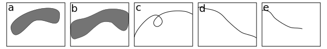
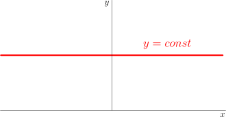
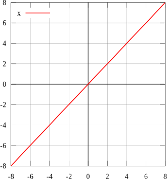
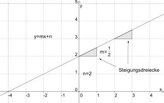
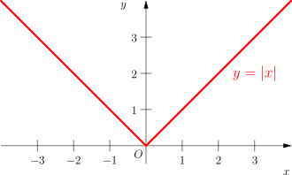
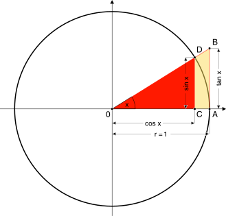
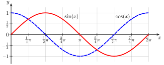
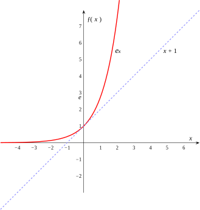
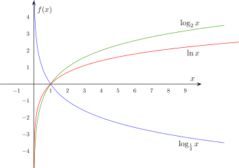

Ziel dieser Lerneinheit ist es die wichtigsten reellen Funktionen
und deren Eigenschaften einzuführen.
Definition: Graph einer Funktion
Sei f:\mathcal{D}\to\mathcal{W} eine Abbildung. Die Menge
G_f=\{(x,y)\in\mathbb{R}^2|y=f(x)\} heißt
Graph vonf.
Da zu jedem x\in\mathcal{D} immer genau ein y\in\mathcal{W}
gehört, sind Graphen von Funktionen immer vertikal doppelpunktfrei.
Ein Kreis zum Beispiel kann nicht Graph einer Funktion sein (aber
Bild - der Unterschied soll klar sein).
Beispiel
Der Graph der Funktion
f:\mathbb{R}\to\mathbb{R}\;,\;f(x)=x ist die
Winkelhalbierende des \mathbb{R}^2, denn
\begin{eqnarray*}
G_f &=&\{(x,y)\in\mathbb{R}^2|y=f(x)\}\\
&=&\{(x,y)\in\mathbb{R}^2|y=x\}\\
&=&\{(x,x)|x\in\mathbb{R}\}
\end{eqnarray*}
Test

Abbildung 1a-e: Teilmengen von \mathcal{D}\times\mathcal{W}.
Welche Teilmengen von \mathcal{D}\times\mathcal{W}
sind Graph einer Funktion?
a,
b,
c,
d,
e
Wichtige Funktionen
Für die im Folgenden aufgeführten Funktionen wird der
Definitionsbereich immer maximal gewählt. Im Allgemeinen gilt, dass
reelle Funktionen auf ganz \mathbb{R} definiert sind, außer bei
bestimmten inversen Funktionen (z.B. Logarithmus, Wurzel) und an
Stellen, an denen durch Null dividiert wird. Dies kann immer dann
passieren, wenn die Funktion als Quotient zweier Funktionen
definiert ist. Dann ist es wichtig, alle Elemente des
Definitionsbereichs identifizieren zu können, für welche die
Funktion im Nenner gleich Null wird. Elemente des
Definitionsbereichs, die von einer Funktion auf Null abgebildet
werden, heißen Nullstellen
Definition: Nullstelle
Sei f:\mathcal{D}\to\mathbb{R} eine reellwertige
Abbildung. Ein Element x\in\mathcal{D} heißt
Nullstelle vonf, genau dann wenn gilt
f(x)=0.
Auch ist es manchmal sinnvoll den Definitionsbereich kleiner zu
wählen, zum Beispiel wenn Invertierbarkeit gewünscht wird.
Konstante Funktionen
Sei c\in\mathbb{R}. Dann heißt
f:\mathbb{R}\to\mathbb{R}\;,\; f(x)=c
konstante Funktion mit Wert c. Sie bildet alle Elemente des
Definitionsbereichs auf die Zahl c ab. Sie ist injektiv nur im
trivialen Fall, in dem der Definitionsbereich aus genau einem
Element besteht. Konstante Funktionen mit c\neq0 haben keine
Nullstellen. Ist c=0, so ist jedes Element des
Definitionsbereichs Nullstelle.

Abbildung 2: Graph einer Konstanten Funktion.
Die Identische Funktion
f:\mathbb{R}\to\mathbb{R}\;,\; f(x)=x
Die Identität bildet jedes Element des Definitionsbereichs auf sich
selbst ab. Daher ist sie bijektiv und ihre eigene Inverse. Sie hat
genau eine Nullstelle bei x=0.

Abbildung 3: Graph der Identischen Funktion.
Affine Funktionen
Seien a,b\in\mathbb{R}. Dann heißt
f:\mathbb{R}\to\mathbb{R}\;,\; f(x)=ax+b
affine Funktion. Im Fall a=0 wird die Funktion zu einer
konstanten Funktion. Im Fall a\neq0 ist die Funktion bijektiv.
Beweis der
Injektivität:
Es ist zu zeigen, dass aus f(x)=f(y) folgt x=y.
Sei also f(x)=f(y), das heißt
ax+b=ay+b Subtraktion von b auf beiden Seiten
und teilen durch a (hier ist a\neq0 wichtig!) liefert
das erforderliche x=y.
Beweis der
Surjektivität:
Es ist zu zeigen, dass für jedes y aus dem Wertebereich ein
x aus dem Definitionsbereich (hier sind beide gleich
\mathbb{R}) existiert, sodass f(x)=y.
Die Bedingung ausgeschrieben und nach x umgestellt liefert
ax+b=y\Longleftrightarrow x=\frac{y-b}{a} und damit
das benötigte x
Ist b=0 so heißt die Funktion lineare Funktion.

Abbildung 4: Graph einer Affinen Funktion.
Ganzrationale Funktionen / Polynome
Sei a_0,a_1,\dots,a_n\in\mathbb{R}, a_n\neq0. Dann heißt
P:\mathbb{R}\to\mathbb{R}\;,\;
P(x)=a_nx^n+a_{n-1}x^{n-1}+\dots+a_1x+a_0
ganzrationale Funktion oder Polynom. Die Zahlen
a_0,a_1,\dots,a_n heißen Koeffizienten des Polynoms P. Die
natürliche Zahl n heißt Grad des Polynoms. Die Polynome ersten
Grades sind genau die affinen Funktionen. Die
Abbildungseigenschaften von Polynome hängen vom Grad und von den
Koeffizienten ab. Polynome gerade Grades, also wenn n=2k für
ein k\in\mathbb{N}, sind nicht surjektiv, Polynome ungeraden
Grades sind surjektiv. Dies exakt zu beweisen fehlen uns hier aber
noch die Mittel.
Die Betragsfunktion "befreit" reelle Zahlen von ihrem Vorzeichen.
Sie ist nicht injektiv, da jeder Wert y sowohl y als auch
-y als Urbild hat. Wird der Definitionsbereich eingeschränkt auf
die nicht-negativen reellen Zahlen (oder die nicht-positiven), wird
die Betragsfunktion injektiv. Da die Betragsfunktion nicht negativ
werden kann, ist sie surjektiv auf die nicht-negativen reellen
Zahlen. Sie besitzt genau eine Nullstelle bei x=0.

Abbildung 8: Graph der Betragsfunktion.
Die trigonometrischen Funktionen

Abbildung 9a: Geometrische Interpretation der Winkelfunktionen.
Abbildung 9b: Wie wird aus der geometrischen Interpretation der
Winkelfunktionen deren Graphen?

Abbildung 9c: Graphen der Sinus- und der Cosinus-Funktion.
Die Exponentialfunktion

Abbildung 10: Graph der Exponentialfunktion zur Basis
e.
Der Logarithmus

Abbildung 11: Graphen der Logarithmus-Funktionen zu den Basen
2, e und \frac{1}{2}.
Konstruktion weiterer Funktionen
Eigenschaften von Funktionen
Neben Umkehrbarkeit haben Funktionen noch viele charaktersitische
Eigenschaften mehr, von denen hier ein paar vorgestellt werden. Wie
bei Injektivität und Surjektivität gilt auch hier
Zuordnungsvorschrift ist nicht gleich Abbildung. Die Abbildung und
ihre Eigenschaften werden ebenso sehr wie durch die
Zuordnungsvorschrift durch ihren Definitions- und Wertebereich
bestimmt.